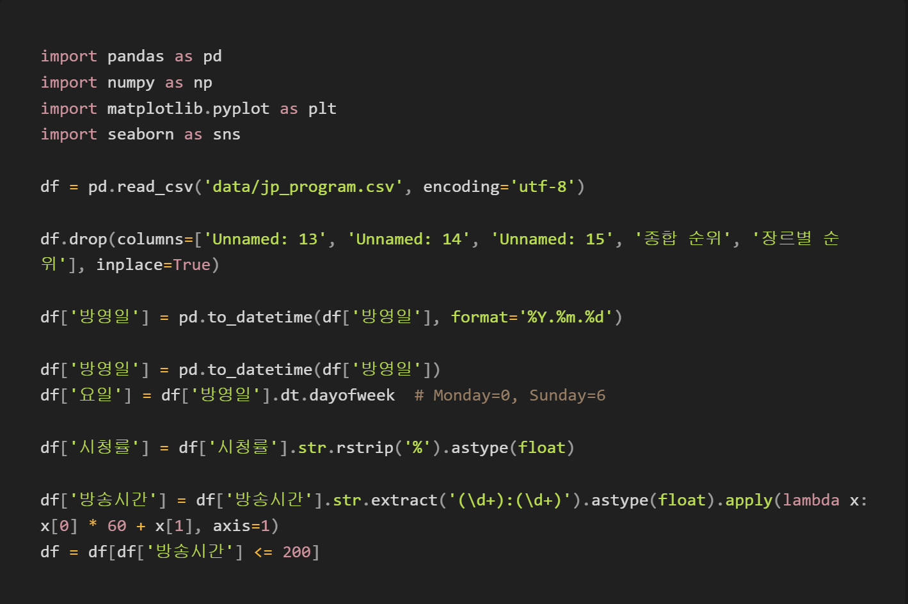

수집 및 분석1
- 종편사 시청률 자료
- 채널A , JTBC, TV조선, MBN
- 2024년 6월 01일~ 2024년 09월 03일
- 채널A 112개, JTBC 95개, TV조선 130개, MBN 140개
- 저녁, 프라임 시간대 시청률, 장르, 방송시간 등제공
- Panda, Matplotlib 활용한 데이터 전처리, 분석, 시각화
- 방영일 ➝ %Y.%m.%d 포맷
- 시청률 ➝ rstrip(‘%’), float 형태
- 방송시간 ➝ 시간의 분 단위화, 200 분 이하 데이터로 필터링
- 
결과 및 해석2